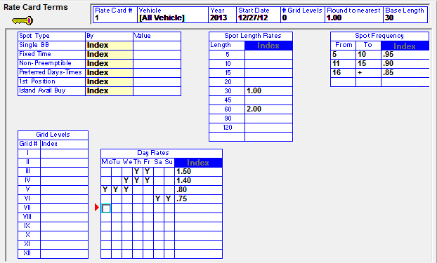
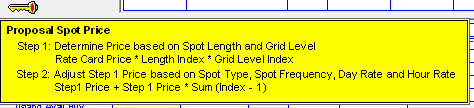
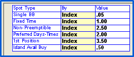
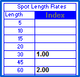
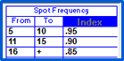
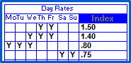
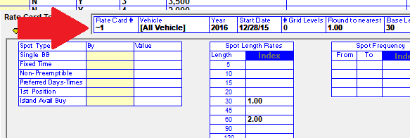

Creating and Editing Rate Cards
It is necessary to enter the first rate card from scratch, manually typing in all the rates. When creating additional rate cards, you will be able to model them from previous rate cards.
Entering a New Rate Card
Select “New” from the dropdown in the upper right corner and press tab.
To create a rate card from scratch, select “None” from the “Model from rate card” screen, and click OK.
The Terms Screen
The Terms Screen is used to enter the Rate Card number and year, as well as defining the Rate Card’s terms. Premiums and discounts can be specified on this screen.

- The Key icon explains the steps to defining the Rate Card Terms.

- Rate Card #: This is the identifying name of the Rate Card
- Vehicle: You can select which vehicles you want to be included on this rate card. The system defaults to “All vehicles”.
- Year: Enter the year of the Rate Card .
- Start Date: This should be the day after the last day of the previous Rate Card.
- # Grid Levels: This field is not implemented, leave it set to zero.
- Round to Nearest: Select the number to which you want spot rates to round. One (1) is the default, meaning that spot rates (when using the rate card for rates) will round to the nearest dollar.
- Base Length: This field is used for the automatic computation of spot length rates, based on an index value defined in the spot length rates box.

Spot Type Index
The Spot Type Index allows you to define special or premium rate increases for specific types of spot buys, such as Preferred Days/Times or 1st Avail Position.
These special spot buys must be activated in the Lists->Site Options Screen.
If using Acquisition Cost Commissions, the commission rate will adjust in accordance to the Spot Type Index Values defined.
Spot Length Rates
The Spot Length Rates Index calculates the rates for various spot lengths based on the Base Spot Length defined in the header.

In this example: If 30 is the base length, a 1 is entered as the index value and a 2 is entered if you want your sixty second spots to be twice the rate of your thirty second spots (you can create whatever index ratio you wish).
Spot Frequency
The Spot Frequency table allows you to give your advertisers a sliding discount based on the amount of spots they order per week.

In this example:
An advertiser would receive a 5% discount if the buy 5-10 spots/week
A 10% discount if they buy 11-15/week
A 15% discount in they buy 16+/week
Grid Levels
This table is currently not implemented.
Daily Rates

The daily Rates Grid allows you to place a premium or discounted rate on certain days of the week.
In this example:
Thursday and Friday is priced at a 50% premium
Wednesday-Friday at a 40% premium
Monday-Wednesday is priced at a 20% discount
Saturday-Sunday is at a 25% discount
When finished entering the Terms, click Done.
Creating a New Rate Card by Modeling
To create a new Rate Card, click on the Rate Card screen and select New from the drop down in the upper right hand corner and tab.
Select the Rate Card you wish to copy.
A date field will appear at the bottom of the modeling selection box. The system will check the last use of every vehicle in the system. If a daypart and/or vehicle has not been referenced on a contract between the default date and today’s date, it will remove them from the new Rate Card. To avoid having any items automatically removed, erase the date in the field and leave it blank.
Click OK and fill in the Terms Screen for the new Rate Card.
Annual Rate Card
Every year, you must create a new rate card. You can do so by following the steps outlined above.
When a contract crosses a year, the system will automatically switch to the appropriate rate card for the appropriate month and year. If a contract is entered that crosses years and the rate card for the future year is not yet defined, the system will accept the order, but the internal rate card price will be zero dollars for those spots ordered in the date range of the future year without the defined rate card rates. Those zero dollar spots/rates will not be included in the Sales Pricing Analysis report, and the box to the right of the NTR dollars that shows the percentage difference between the contract air time gross and the rate card price air time gross will not appear in Orders or Proposals.
Correcting Contracts Referencing a Zero Dollar Rate Card
If a contract crossed years prior to the future year’s rate card being defined, follow the procedures below to correct the rates:
- Add the Rate Card for the new year.
- Remove the weeks in the order(s) that are ordered in the new year.
- Save the revised contract.
- Add the weeks back into the contract and save the order.
- Schedule the changes.
Entering Vehicles on the Rate Card
Each vehicle (except NTR Vehicles) that will be used must have at least one daypart defined in Rate Card.
- Select the Vehicle from the Vehicle field dropdown.
- Select the Daypart from the Daypart field dropdown.
- If on V7.1 or higher and Barter is enabled in Traffic Site Options, you can enter a default acquisition cost for selling and conventional vehicles in the “Acq Cost” field.
- Indicate whether the daypart is the Base daypart “Base” field.
- Indicate whether the daypart should appear on reports in the “Rpt” field.
- Assign a sort code to each vehicle/daypart in the “Sort” field. The Sort number will effect that order in which dayparts per vehicle are sorted on reports
- If using the Proposal System, enter your spot rates per vehicle and daypart by Quarter, Month, Week, or Flight.
- The default flight length is 52 weeks. To change it, click on the “# Weeks” field and enter the new number in the “New Number of Weeks” field. On this pop up menu, the question “Set Weekly Prices to Average Value Within Flight Date” can be checked on to use the average spot rate within the flight date range.
When entering vehicle and rates on the Rate Card screen, you must tab through the vehicle Rate Card line completely to the next line to fully enter the line and ensure that it saves when saving the rate card.
Entering Multiple Rate Cards For a Single Year
You can enter multiple rate cards per year. For example, in addition to entering a basic rate card for the year, you may decide to enter a minimum rate card that can be used for remnant type contracts or similar spot types. The effectiveness of Rate Cards can be measured by comparing them to other Rate Cards, Actuals, Budgets, and the prices needed to make budget or research data.
Suppressing Rate Cards
It’s possible to create a rate card that will not be viewable or selectable from the Rate Card field on the Proposal and Orders screen if the rate card is only intended to be used for specific reporting purposes. This can be done by entering a tilde “~” character as the first character of the Rate Card number, as shown in the picture below.

The following rules determine which users will see a rate card when the number starts with a tilde character like this:
1. If the Proposal System is not activated, and the user is defined as a salesperson, then they will not be able to view the Rate Card with a tilde as the first character in the rate card number field.
2. If the Proposal System is activated, as long as the user cannot change the contract status to any of the hold or order options, then they will not be able to view the Rate Card with a tilde as the first character in the rate card number field. In other words, if a user can change a proposal to an order, then they will be able to view the rate card with the tilde.